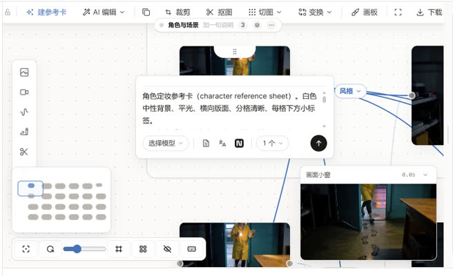
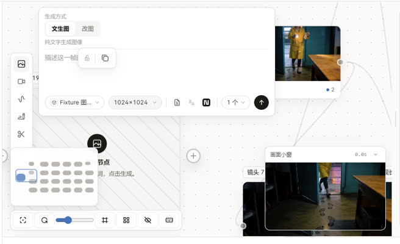
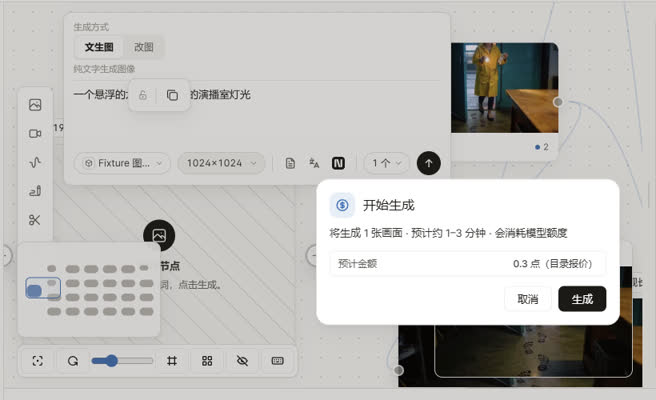
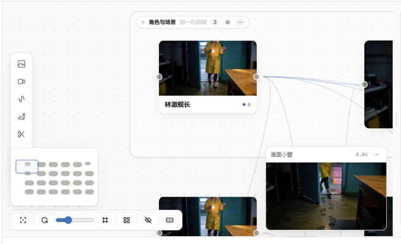

三件事都来自你 09-25 的反馈，方向你已经拍了。这张样张只做两件事：把「拍了的方向」画成能点的样子让你确认细节，以及把没定的几个细节列成题、每题带默认答案。底图和几何全部取自真机（1280×800 小窗、「用过的项目」夹具），不是脑补。
你的原话：「参数卡片位置错位……长度老是变来变去的，偶尔长偶尔短；拖过去它为了显示参数卡片导致都是错位的，我觉得遮挡就遮挡了，保持位置。」


改后 · 可体验。切「靠右边 / 靠底部」：浮框不躲、不翻、不变宽，出了画布就被裁掉，想看全就自己拖画布。切缩放：节点变大变小，浮框始终 560px、始终居中在节点正下方 14 个画布单位处。点提示词右上角 试「展开」。
| 这一块 | 现在 | 改后 | 为什么 |
|---|---|---|---|
| 位置 | 居中→推回屏幕内→放不下翻到节点上方→再躲左缘工具条、底部缩放条/时间轴胶囊 | 永远在节点正下方、水平居中，出屏就出屏 | 你拍板「被挡就挡」；这也正是 React Flow 官方节点浮层 NodeToolbar 的做法（只钉锚点+反缩放，不做任何躲避） |
| 宽度 | w-max：跟着内容撑，360–880px 之间，换模型/换语言/参数摘要变长都会变 | 固定 560px（屏幕像素，不随缩放） | 「长度变来变去」的直接原因就是内容驱动宽度。560 = 现役最宽的视频节点底栏在英文下一行放得下的宽度（实现时实量，放不下就参数摘要截断，不换行） |
| 高度 | 按屏幕剩余空间压缩，参考区压成滚动口 | 按内容，上限不变（图 400 / 视频 460），超出在卡内滚 | 不再看屏幕剩多少空间，同一个节点每次打开都一样高 |
| 性能 | 常驻 requestAnimationFrame：每帧 querySelectorAll + 量 N 个矩形 | 零 JS 定位：纯 CSS left:50%; top:calc(100% + 14px) + 反缩放 | 整套放置 hook（useComposerViewportPlacement.ts 210 行）删掉，一个没有入参的东西不需要每帧算 |
| 提示词「展开」 | 没有，长提示词只能在 3 行小框里滚 | 右上角一颗 ，点开原地变高显示全文（上限 360px，再长卡内滚），再点收起 | 参考 LibTV 提示词框右上角的展开图标。只在提示词超过 3 行时出现 |
你的决定：单个节点生成不弹窗，预计花费显示在发送按钮旁（像 LibTV 的「⚡ 18」，未标价就写未标价）；一次生成多个或单次超过某个金额才弹确认；Agent 发起的付费照旧确认。

判据（唯一 owner：spend/spendConfirm.ts 里一个纯函数） | 弹不弹 | 例子 |
|---|---|---|
| 本地 ComfyUI，不花钱 | 不弹（现状就是） | 本地显卡跑图 |
| 我自己点的、这一下只跑 1 个、报价 < 门槛（含「未标价」） | 不弹 | 节点 ↑ / 结果卡「重新生成」/ 失败卡「重试」/ 分镜行「生成」/ 选中 1 个按 Ctrl+Enter |
| 这一下跑 ≥2 个 | 弹 | ×2 变体、多选「生成 N」、批量条、组框「生成」、带未出图上游的镜头（先补参考再生成） |
| 单次报价 ≥ 门槛（默认 10 点，见第 4 节第 3 题） | 弹 | 贵的视频模型 |
| Agent 或外部 MCP 发起 | 弹（照旧） | Agent 付费卡、分镜草稿里 Agent 点的生成 |
| 第一次走匿名托管，要告知 | 弹（照旧，告知只能在卡里给） | 托管通道首次使用 |
你的原话：「老是动画布，我刚才用付费卡点击之后画布就闪动一下，然后我就找不到那个镜头生成去哪里了……有时候导入的时候不在中心展示导致找不到，好像修过，但类似问题反复发生。」

程序主动移动画布的次数：0（改后恒为 0）。新东西先找当前屏幕里的空位落；屏里没空位，落在旁边并在那一侧边缘出一颗提示，点它画布才移过去。你自己拖画布把它们拖进屏里，提示也会自己消失。
| 谁在移动画布（实数 17 个写入口，门表见第 5 节） | 改后 |
|---|---|
| 新建 1 个节点后「露出」动画（工具条新建、⌘D 复制、复制变体、粘贴、侧栏「重新生成副本」） | 删 落在屏内；落不下 → 边缘提示 |
| Agent / 付费卡落地：单个先聚焦放大，再适应全图；多个直接适应全图；还会自动切分类 | 删 不切分类、不移动；落在当前可见区，放不下 → 边缘提示（在别的分类就写「在『分镜』里」） |
| 素材库上传 / 九宫格切图后「适应全图」 | 删 导入落在屏幕中心附近（现在写死在 (120, 90)），放不下 → 边缘提示 |
| 「重新生成」复制出新节点后聚焦过去 | 删 同上 |
| 打开项目时没有记住的视角 → 第一次摆好全貌 | 待定 见第 4 节第 4 题（我建议保留：那是「第一帧」，不是「移动」） |
| 你点的：适应视图、复位、缩放条/快捷键、小地图、侧栏点节点定位、「在画布上查看」、「定位来源」、通知/深链跳转、边缘提示 | 留 这些是你要它动 |
| 拖节点/框选到屏幕边缘时画布跟着滚 | 留 手在拖，是你在动 |
| 方案 | 你看到什么 | 代价 |
|---|---|---|
| A 定死 560（推荐） | 任何节点、任何缩放、任何模型，浮框一模一样宽 | 放大到 140% 以上时节点比浮框宽，浮框看着「窄」 |
| B 跟节点同宽，最窄 560 | 放大时浮框跟着节点一起变宽，两条边对齐 | 缩放一下宽度就变，还是「变来变去」，只是变得有规律 |
| 这块 | 谁管 | 要动的点 |
|---|---|---|
| 浮框外壳 | nodes/NodeGenerationComposer.tsx:355-598 | :362 / :392 的 w-max；:371-375 的 left/top/maxWidth；:120 floatingComposerLayout 其实不算宽度 |
| 浮框放置 | nodes/useComposerViewportPlacement.ts:72-210 | 整文件删；:192 常驻 rAF、:95 每帧 querySelectorAll |
| 翻转后的比例锚边 | NodeParameterControls.tsx:235 → nodeSizing.ts:420 | 不再翻转 → 恒为 'bottom'，参数删掉 |
| 确认判据 | spend/spendConfirm.ts:209 confirmGenerationSpend | 今天唯一规则是「全是 ComfyUI 就不弹」（:195） |
| 主进程花钱闸 | electron/spendGrant.ts:137 | 没带报价的令牌会被拦下、再弹一张更吓人的卡 → 不弹窗也必须走报价→铸令牌 |
| Agent 来源丢失 | capability/storyboardPresent.ts:52 | source:'agent' 没传进 confirmAndRunNode → 要接上，否则「单个不弹」会把 Agent 的也放掉 |
| 付费卡落地的两次移动 | agent/applyCanvasToolCall.ts:540-559 + capability/multiShotCanvasLanding.ts:333 | 聚焦放大 + 360ms 后适应全图 = 「闪」 |
| 新建后露出 | components/useCreatedNodeVisibilityPan.ts:142-224 | 整文件删 |
| 视口动画 | reactFlow/useReactFlowViewportAnimation.ts:48 + components/viewportAnimationCoordinator.ts | 自研 rAF 逐帧 setViewport → 每帧触发 onMoveEnd（GenerationCanvasReactFlowViewport.tsx:262-264）写 store。改用 React Flow 自带的带时长 setViewport：一次移动只结束一次、手一碰就打断 |
| 落点 | store/canvasNodeActions.ts:69（默认 (120,360)）、AssetLibraryPanel.tsx:249（写死 (120,90)）、capabilityCore/canvasNodeLayout.ts:141（Agent 批量排在所有分类最下面） | 收成一个「落点」owner：先找当前可见区的空位 |
| 控件 | 现在在哪层 | 改后 | 手法 | 底栏常驻簇数 |
|---|---|---|---|---|
| 预计点数 | L3（点了 ↑ 才在弹窗里看到） | L1，贴 ↑ 左边的只读文字，不是按钮 | 就近 | 4 簇不变：模型+参数 │ 写提示词 │ ×N │ 走（点数并进「走」这一簇） |
| 「开始生成」确认弹窗 | 每次都出 | 单个且不贵时删掉这一步 | 去重（↑ 和「生成」是同一个决定点两次） | |
| 提示词展开 | 无 | L2，提示词超过 3 行才出 | 就近 |
任务卡：「刚让 Agent / 导入 / 复制建了东西的人，在新东西不在屏幕里的那一刻，知道它在哪、点一下到那儿，就走。」
| 我没放上去的 | 为什么 | 要它时怎么找到 |
|---|---|---|
| 缩略图 | 新节点多半还没出图（空卡/排队中），缩略图是一块条纹，没信息 | 点胶囊过去就看到节点本身 |
| × 关闭 | 它自己会消失：点了、或你把那些节点拖进屏里、或它们被删 | 不需要 |
| 「不再提示」 | 它不打断任何事、不挡操作，关掉它等于回到「找不到」 | 不提供 |
| 逐个列出 | 一批一颗就够；点过去是把这一批一起摆进屏里 | 侧栏节点树仍然可以逐个定位 |
| 卡点 | 用户看到什么 | 会卡在哪 | 我们做什么 | 证据 |
|---|---|---|---|---|
| ① 怎么知道 | 新东西落在屏外的那一刻，对应那条边出一颗胶囊 | 胶囊被底部缩放条/时间轴胶囊挡住 | 底边让位复用现役的停靠区判据 | generation/workspaceBottomDocks.ts resolveUsableBottomAboveDocks |
| ② 付出什么 | 点数常驻在 ↑ 旁；胶囊点了只移画布 | 未标价时不知道多贵 | 明写「未标价」，不挡生成 | docs/plan/2026-09-21-unknown-price-open-gate.md（未知价不许挡生成） |
| ③ 空了/错了 | 点 ↑ 后节点上立刻出排队状态条 | 没弹窗，担心「到底点上没有」 | 状态条就是回执，不另加 toast | nodes/GenerationStatusBar.tsx（排队 ink-30 → 进行 accent） |
| ④ 凭什么信 / 怎么回头 | 点数和确认卡、主进程报价同一个公式 | 点错了已经扣钱 | 门槛封顶；供应商没有取消接口，这条如实告诉你 | electron/shared/contracts/shotPricingRule.ts:93 deriveShotPrice |
这条路几步？生成：2 步（↑ → 弹窗「生成」）→ 1 步。找新节点：现在 0 步但画布被抢走；改后 0 步（在屏内）或 1 步（点胶囊）。砍不掉的那一步是「点胶囊」——它换来的是画布不被抢。
| 我原来的判断 | 被什么推翻 | 来源 | 后果 |
|---|---|---|---|
浮框宽度是 floatingComposerLayout(visualSize) 按节点尺寸算出来的，改公式就行 | NodeGenerationComposer.tsx:120 这函数把宽高参数直接丢掉，宽度来自 w-max | 自查（实读） | 否则会去改一个根本不决定宽度的函数，宽度照样抖 |
「不弹窗」= 不调 requestConfirm 就行 | electron/spendGrant.ts:137：没报价的令牌被主进程拦下，改弹一张「经 AI 助手驱动」的卡 | 自查（实读） | 会把一个弹窗换成另一个更吓人的弹窗 |
「开始生成」只从 confirmAndRunNode 出来 | 选中 1 个按 Ctrl+Enter 走的是批量路 useCanvasProductionActions.ts:48，文案一模一样 | 自查（实读） | 判据挂在入口上会漏一条路；改成按「这一下跑几个」判 |
| 付费卡后的「闪」是一次适应全图 | applyCanvasToolCall.ts:557 先聚焦放大到 ≥100%，multiShotCanvasLanding.ts:333 360ms 后再缩小 | 自查（实读） | 只删一处会留下另一处，还是会动 |
| 新建节点时画布只是「轻微让位」 | 真机截图 00→05：整张画布平移，原来的卡直接出屏 | 自查（真机） | 比我以为的严重，所以「露出」动画整个删，而不是调小 |